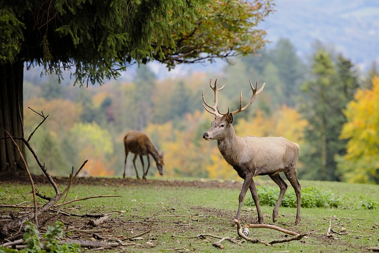

Цікаві Факти про Оленів.
1. Олені скидають роги щороку, після чого відрощують нові. Винятком є водяні олені, у них немає рогів.
2. Розмах рогів гігантського оленя, вимерлого близько 7,5 тисяч років тому, досягав 3,6 метрів.
3. У дикій природі олень живе 10-13 років.
4. Всього в світі існує 51 вид оленів.
5. Маленькі оленята одразу можуть стояти на ногах після народження.
6. Середня швидкість бігу благородного оленя - 30 км/год.
7. Роги оленів складаються з декількох видів тканин, захисних на поверхні, і більш тонких всередині, забезпечених кровоносними судинами, які живлять роги необхідними мікроелементами.
8. Щоб підтримувати теплу температуру взимку, олені посилено обростають шерстю.
9. Найменші олені – водяні, вони важать всього 10-15 кг. А найбільші – благородні олені, їх вага становить 200кг.
10. Олені полюбляють їсти банани.
11. Щоб зберегти енергію в періоди, коли їжі не так багато, метаболізм цих тварин сповільнюється, серце оленів починає битися повільніше.
Перейти до наступної тварини